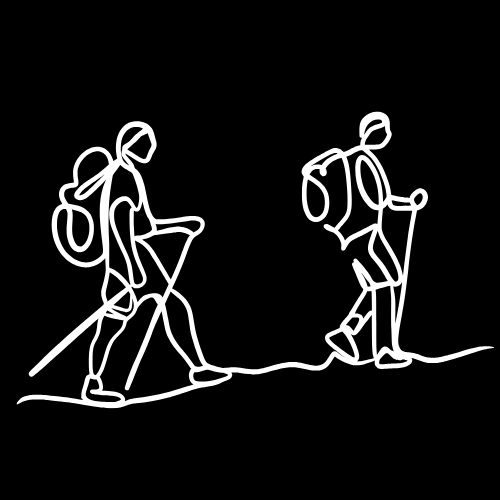

.gif)
|
| CULES SON MIS HOBBES? |
| MUSIC | DRAWING | VIDEO GAMES | HIKING | RALLY |
 |
 |  |
||
What kind of music do I listen to? Listen to various genres, for example; corridos, punk, rock in English, electronica, reggae, among others |
I only draw when I'm bored |
The video games I play are Warzone, Call of Duty, GTA 5, Minecraft, Mortal Kombat, F1, Need for Speed and Forza |
I go out with friends on the weekends to go hiking in the nearby mountains and from time to time we do some climbing. | I watch programs related to motor sports such as "Dakar", Formula 1, WSC among others. |
| MUSIC | |
| DRAWING |
 |
|
| I usually draw landscapes or cars as it entertains me even though I am more of a fan of drawing landscapes I like to draw cars whether they are new cars, old, jdm, competition, or parts. | I only draw when I'm bored I put on some music I use a notebook and a pencil and I draw something |
| GAMES |
The video games I play are Warzone, Call of Duty, GTA 5, Minecraft, Mortal Kombat, F1, Need for Speed and Forza |
| HIKING |
| I go out with friends on the weekends to go hiking in the nearby mountains and from time to time we do some climbing. | |
 |
.gif) |
veo programas relasionado al deporte de motor como por ejemplo "dakar", la formula 1, wsc entre otros |
| deporte de motor | mecanica automotris |
|---|
| rally | competencias de rrendimiento | por que me intereso la mecanica? |
|---|
| El porque? es algo sensillo pero dificil de explicar los autos ya sea diesel o gasolina. creo que no solo son herramientas que me llevan de punto (a) a punto (b) .sino que yo me imagino que tienen alma o emosiones . Nose el rujir de los motores , cada derrape, cada ves que se ensiende siento paz el sonido de ellos y tal vez paresca que estoy loco o algo asi pero es algo que solo un aficionado a los motores entenderian . | ||
| en si mi aficion asia los motores biene desde que yo rrecuerde fue desde mi niñes , rrecuerdo que yo beia series o peliculas como gas monquie o cars en la tele y cuando pasaban la pelicula de transformers obligaba amis papas que la bieran con migo y tambien al terminar de ver rrapidos y furiosos . Puse un bote de plástico ami bisi y me sentí dominic toreto. |
 |